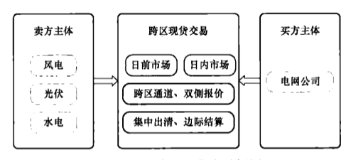
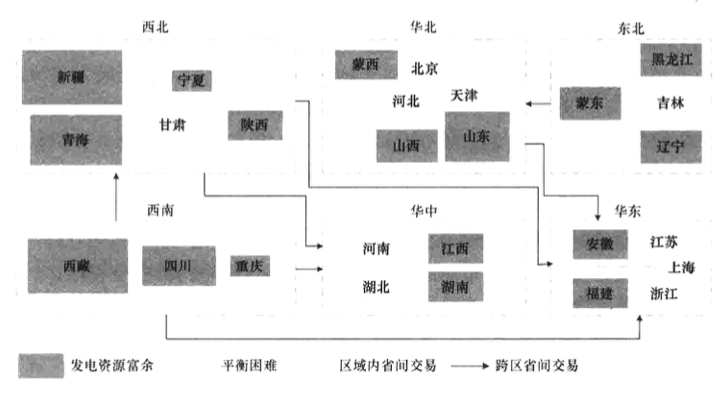
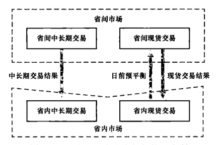
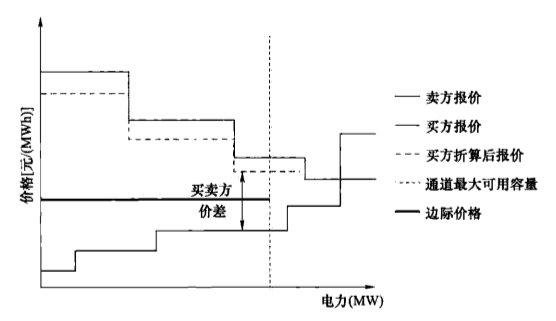

省间电力现货市场
中发9号文及其配套文件明确提出了加快构建有效竞争的电力市场核心目标。随着电力体制改革逐步推进，需要通过市场化手段建立省间电力现货交易机制，进一步打破省间壁垒，充分发挥互联大电网在我国能源资源优化配置中的主平台作用，促进能源资源跨省区大范围配置。本章结合我国国情，介绍了省间电力现货市场的建设基础、建设概况，概述了市场建设方案及运营规则，并且根据结算试运行情况，分析了省间电力现货市场开展的效果。
14.1 市场建设基础
我国经济社会发展以省为主体，电力工业长期以来形成了以省为基础的电力供应格局。能源电力发展规划、经济运行和安全生产等均按省级行政区域实施管理。同时，我国能源资源与负荷分布不均衡的国情以及发展可再生能源的要求，客观上决定了省间市场开展的必要性，需逐步打破省间市场壁垒，实现能源资源更大范围的优化配置。
14.1.1 省间电力交易建设基础
14.1.1.1 资源禀赋和负荷逆向分布
从资源分布看，我国90%的煤炭、85%的太阳能、80%的风能集中在西部和“三北”（东北、华北、西北）地区，80%的水能集中在西南地区，而70%的用电负荷集中在中东部地区。这一资源禀赋和负荷分布特点决定了我国必须走符合我国国情的能源转型发展道路，持续扩大跨省区输电规模。
14.1.1.2 大电网互联格局基本形成
我国能源资源与负荷逆向分布，客观要求构建大电网，大范围优化配置资源。国家电网已建成跨区直流29回（其中特高压直流14回），覆盖23个省级电网。为支撑跨区直
流送受电和网内资源配置，华北、华东已形成特高压交流主网架，华中特高压交流主网架逐步成形。
14.1.1.3 系统规模巨大
从电网整体看，我国装机2260GW，其中新能源装机560GW，均居世界第一；国家电网有限公司装机1730GW，已构建完成以特高压输电为骨干、各级电网协调发展的交直流联大电网，跨省跨区输送能力达270GW，有力支撑资源大范围配置。
14.1.1.4 全网电力电量一体化平衡已成趋势
跨省跨区交换电量持续快速增加。2020年跨省跨区交易电量1157.7TWh，接近公司售电量的1/5。2021年7月14日，全国日发电量创历史新高，跨省跨区电力占全网负荷比例最高达到23%，接近1/4。
14.1.2 跨区域省间富余可再生能源电力现货交易
2017年8月18日，国调中心结合国情、网情，组织开展了跨区域省间富余可再生能源电力现货交易（简称跨区现货交易）试点工作。
跨区现货交易是指在国家电网有限公司经营区域内通过跨区输电通道，组织买方与卖方（风电、光伏、水电等可再生能源发电企业），通过跨省区电力现货市场技术支持系统开展的电力交易。跨区现货交易包括日前、日内市场，跨区现货交易框图如图14-1所示。

图 14-1 跨区现货交易框图
14.1.2.1 交易标的
跨区现货交易的标的为送端可再生能源富余发电电力，即落实各类中长期外送计划和交易后，若送端省发电侧、负荷侧调节资源已经全部用尽，仍有富余可再生能源电力时，则组织开展跨区现货交易。
14.1.2.2 市场主体
卖方市场主体为风电、光伏和水电等可再生能源发电企业；买方主体为省级电网企业，可逐步引入电力用户、售电公司（初期由电网企业代理）参与；输电主体为国家电网有限公司。
14.1.2.3 出清机制
基于交易路径的网损和输电费，考虑多级联通道动态可用输电容量、电力平衡、爬坡等约束，按照买卖方高低价差匹配的方式进行集中竞价出清。
14.1.2.4 价格机制
采用买卖方双侧报价的边际电价机制，每个送端省份最后一笔成交电量买卖双方报价的平均值为该省边际电价，该省成交电量按照边际电价结算。
14.1.2.5 市场流程
日前跨区现货交易按日组织，每个工作日组织次日96个时段的现货交易；日内跨区现货交易按5个交易段（0:15～8:00、8:15～12:00、12:15～16:00、16:15～20:00、20:15～24:00）组织。
截至2021年底，跨区现货交易已平稳开展4年多，实现了国家电网有限公司经营区域的全覆盖。自开展试点以来，送端16个省超过2300家可再生能源发电企业参与交易，累计减少可再生能源弃电超26TWh。跨区现货交易培养了市场主体的市场意识，锻炼了市场人才队伍，积累了市场建设和运行经验，为建立健全省间电力现货市场体系奠定了坚实基础。
在实现“双碳”目标的进程中，随着新型电力系统建设工作的推进，新能源将逐步成为装机和电量供应主体，对新能源消纳和跨省电能余缺互济提出了更大需求。亟须建立促进“双碳”目标的市场机制，以适应高比例新能源消纳场景，发挥市场作用、拓展消纳空间。
14.2 市场建设概况
省间电力现货市场在跨区域省间富余可再生能源现货交易试点的基础上，初步构建全国统一电力现货市场，进一步扩大市场主体的参与范围与参与程度，针对送端省内富余电力，利用跨区跨省输电通道剩余空间，开展省间日前、日内电能交易，推动省间电力现货市场的发展，满足可再生能源外送、省间余缺调剂和送端省内富余电力在全国范围优化配置的需要。
14.2.1 市场建设目标及原则
14.2.1.1 市场建设目标
省间电力现货交易的目的是在落实省间国家计划和中长期交易基础上，充分发挥市场作用，对富余电能资源进行大范围优化配置，促进绿色清洁发电和省间电能余缺互济。省间现货启动运行后，标志着“统一市场、两级运作”的市场框架雏形基本建立。
14.2.1.2 市场建设原则
（1）确保电网安全运行。以确保电网安全稳定运行为前提，市场设计充分考虑与现有电网运行管理体系和安全管理措施有效衔接。
（2）落实国家能源战略。体现国家能源发展战略，利用跨省跨区输电通道，通过市场化手段开展电力余缺互济、促进清洁能源大范围消纳，推动构建以新能源为主体的新型电力系统，助力实现碳达峰碳中和。
（3）发挥市场配置作用。构建竞争有序的电力市场体系，充分发挥市场在资源配置中的决定性作用，促进能源资源大范围优化配置，提升市场效率与效益。
14.2.2 市场建设历程
2018年5月，国调中心在跨区域省间富余可再生能源电力现货交易试点基础上，巩固跨省区现货试点工作成果，设计了省间电力现货市场建设方案，并纳入了《全国统一电力市场深化设计方案》。
2019 年，国调中心会同北京电力交易中心，就报价实现方式、出清算法、操作流程等进行了多轮细致深入的分析讨论，形成《省间电力现货市场交易规则》（本节简称《规则》）初稿，并完成调度系统和部分专家的意见征集。
2020年4～7月，国调中心根据国家电网有限公司《全国统一电力市场顶层设计方案》对《规则》进行了完善，组织相关分部和试点省公司，结合实际运行开展模拟推演，并结合推演发现的问题对规则进行了优化。
2021年6月，国调中心采纳部分专家意见，进一步完善《规则》，并将《规则》上报国家发展改革委。
14.2.3 政策要求
2015年3月15日，中发9号文正式印发，新一轮电力体制改革启动。文件提出“加快构建有效竞争的市场结构和市场体系，形成主要由市场决定能源价格的机制”，“推进跨省跨区电力市场化交易，促进电力资源在更大范围优化配置”。
为缓解“三弃”问题，在落实跨省跨区中长期交易基础上，当送端电网调节资源已经全部用尽，可再生能源仍有富余发电能力、可能出现弃水弃风弃光时，充分利用跨区通道富余通道能力，用市场化方式组织开展日前、日内跨区域外送交易，尽最大可能消纳可再生能源。2017年8月18日，根据《国家能源局关于同意印发〈跨区域省间富余可再生能源电力现货交易试点规则（试行）〉的复函》（国能函监管〔2017〕46号），国调中心正式组织开展跨区域省间富余可再生能源电力现货交易。
2021年11月1日，国家发展改革委、国家能源局联合印发了《关于国家电网有限公司省间电力现货交易规则的复函》（发改办体改〔2021〕837号），同意国家电网有限公司按照省间电力现货交易规则组织实施。11月22日，国家电网有限公司正式印发《省间电力现货交易规则（试行）》（国家电网调〔2021〕592号）。
14.3 市场建设方案
为建立规范的跨省跨区电力市场交易机制，充分发挥市场配置资源、调剂余缺的作用，国家电网有限公司在国家发展改革委、国家能源局的领导下，总结跨区现货交易试点经验，凝聚行业专家和市场主体的智慧和力量，结合保障电网安全稳定运行、保障电力可靠供应、促进清洁能源消纳的实际需求，研究编制了《省间电力现货交易规则（试行）》。本节从市场定位、交易范围、交易品种及交易周期、市场成员参与机制、市场组织机制、市场衔接机制、出清及定价机制、交易执行与偏差处理、结算原则等几方面介绍了省间电力现货市场的建设方案。
14.3.1 市场定位
省间电力现货交易定位于推动构建省间省内完整统一市场体系，适应可再生能源发电和电网负荷需求动态变化特点，在落实省间国家计划和中长期交易基础上，利用市场化机制开展省间电力余缺互济，促进能源大范围优化配置。
14.3.2 交易范围
省间电力现货交易支持各省符合准入条件的所有市场主体开展跨省跨区电力现货交易。通过扩大市场配置范围，可进一步提高资源优化配置效率，增加社会福利，降低用电成本，有效缓解区域内清洁能源消纳压力，促进全网电力余缺互济，全国范围省间现货交易示意图如图14-2所示。

图 14-2 省间电力现货交易示意图
14.3.3 交易品种及交易周期
省间电力现货交易包括日前交易和日内交易，交易品种为电能量交易。电力最小申报
单位为 1MW；最低申报限价为 0 元/MWh，最高限价为 10000 元/MWh。
日前市场：以15min为1个点，按日开展次日全天96个点的省间日前现货交易。
日内市场：以2h为一个固定交易周期，在日前交易基础上开展未来8个点的省间日内现货交易。若日内交易周期内仍有新增富余电力外送和购电需求，可组织临时交易，进一步增加交易频次。
14.3.4 市场成员参与机制
市场成员包括发电企业、电网企业、售电公司、电力用户及市场运营机构。可再生能源发电企业、火电企业及核电企业可作为卖方参与市场交易。电力用户及售电公司作为买方参与市场交易。电网企业按照地方政府的要求，代理暂未直接参与市场交易的工商业用户和居民、农业用户参与省间电力现货交易。
在市场成员购售电角色方面，随着新能源装机占比不断提升，当新能源出力大幅波动、来水预测存在偏差或水电丰枯转换时，部分省份在月度甚至日内的电力平衡情况可能出现较大变化。青海、四川等地区日内出现了低谷消纳能力不足、高峰电力平衡困难的“两难”问题，导致其购售电需求在不同季节、甚至同一天内不同时段都不一样。
为解决此问题，需要改进以跨区通道送受端确定省间交易角色的方法，可再生能源富集地区各省不再只能卖电，“三华”（华中、华北、华东）地区各省也不再只能买电。在机制设计中，允许各省根据省内电力供需形势，在保证清洁能源消纳的前提下，灵活确定省内市场主体在各交易时间点的购售角色。即：在同一交易时间点，省内可再生能源富余时，交易角色为卖方，省内市场主体不得在省间电力现货交易中买入电能；省内平衡紧张时，省内市场主体不得在省间电力现货交易中卖出电能；其他情况下，省内市场主体可以按规则申报买入或卖出电能。
14.3.5 市场组织机制
省间电力现货交易涉及市场主体分布广、类型多，电网安全管控难度高，需要各级电网调度机构及电力交易机构按照以下职责协同组织市场运营。
（1）国调中心、网调负责省间电力现货交易的组织运行，并按调管范围开展日前跨省跨区发输电预计划编制、断面限额维护、安全校核等工作。
（2）网调负责省间辅助服务市场的组织运行，负责区域电网的安全校核。
（3）省调负责省内电力现货市场及省内辅助服务市场的组织运行。
（4）电力交易机构主要负责市场注册、交易申报、出具结算依据、信息发布等环节。
国调中心、网调和省调三级调度在两级市场运作过程中按调管范围开展安全校核，分层次、分阶段协同配合，共同保障电网安全稳定运行。
考虑到电网安全以区域交流同步电网为控制大区的现状，在所有市场组织完成后，由网调负责区域电网安全校核。区域电网安全校核基于全网完整模型进行计算，可避免非
完整模型下的独立出清结果在实际执行时出现越限。
14.3.6 市场衔接机制
省间电力现货交易是全国统一电力市场的重要组成部分，需要从交易时序、市场边界和偏差处理等方面，设计省间现货交易与省间中长期交易、省间现货交易与省内现货交易的衔接机制，如图14-3所示。

图 14-3 省间、省内市场衔接示意图
在交易时序方面，省间中长期交易先于省内交易开展；现货交易中首先开展省内电力现货市场预出清或预平衡，再开展省间日前现货。
在市场边界方面，省间中长期交易和省间现货交易结果作为省内现货市场的边界。
在偏差处理方面，实际运行与合同约定产生的偏差，根据成因和影响范围，分别按照省间、省内市场规则处理。
日前阶段，国调中心、网调在D-2日下发基于中长期交易计划的跨省跨区通道输电计划及直调机组预计计划，作为省内预出清或预平衡的边界，实现中长期与现货的时序衔接；省调根据接收的联络线预计划进行省内预出清或预平衡，确定省间交易需求；国调中心、网调组织开展省间现货交易，实现省内与省间的第一次衔接。省间现货出清结果叠加中长期曲线作为省内现货市场正式出清的边界，省内以此为边界进行省内电力现货市场和辅助服务市场出清，实现省间与省内的第二次衔接。
日内阶段，国调中心、网调组织开展省间现货交易；网调组织开展区域内省间辅助服务交易，并开展区域内滚动校核。
实时阶段，省调组织开展省内现货及辅助服务交易。
14.3.7 出清及定价机制
省内交易大多在出清中确定电能量交易成本，出清后再叠加固定的输电成本形成购电成本。而省间电力现货交易中，各区域电网、跨省跨区专项输电工程和省内输配价格及网损均不相同，需要根据买卖双方达成交易所途经的省级电网、区域电网和跨省跨区专项输电工程，确定输电成本和综合网损。因此，在保证电网安全稳定运行的前提下，省
间电力现货交易还需要解决输电成本的差异定价、输电网损的精细计算以及稀缺输电资源的公平分配等问题。
为解决此问题，省间电力现货交易采用考虑多级联通道动态 ATC、网损和输电费的集中出清机制。根据买卖双方申报的分时“电力电价”曲线，按双方可行交易路径，计及交易路径输电成本，确定买卖双方价差，形成交易组合。按交易组合价差由大至小依次成交，在考虑电网安全约束后，依序使用交易路径中各省间通道的输电资源达成交易。
通过在交易出清过程中引入输电权的隐式拍卖，解决了省间输电资源优化分配的难题。在该机制下，相同买卖方间优先使用输电成本低的路径达成交易，不同买卖方间根据报价高低确定省间通道的优先使用权。竞价机制示意图如图14-4所示。

图 14-4 竞价机制示意图
省间现货交易采用边际电价结算机制。卖方节点最后一笔成交交易对的买卖双方价格算术平均值为该卖方节点竞价出清的边际价格，以此作为该卖方节点所有成交交易的结算价格。将此边际价格按交易路径输电价格和输电网损反向折算到买方节点的价格，作为该买方节点与对应卖方节点成交交易的结算价格。
14.3.8 交易执行与偏差处理
电网调度机构按照以下优先级安排跨省区联络线计划：跨省区中长期交易、省间日前现货交易、省间日内现货交易。
省间电力现货交易结果纳入跨省区联络线计划，作为省内市场的运行边界，原则上不限随市场主体的实际发用电而变化。
当跨省区联络线因电网故障、设备异常、自然灾害、外力破坏及其他原因导致输电能力下降时，电网调度机构依据调度规程，按照“安全第一”的原则，及时调减或取消省间电力交易。跨省区交流联络线输电功率波动、输电网损误差等因素造成实际执行值与所有交易的偏差，按照相关交易规则处理。
14.3.9 结算原则
省间电力现货交易结算采用日清月结方式，D+5日进行市场化交易结果清分，生成日清算结果，由电力交易机构出具结算依据，并向市场主体发布。电网调度机构D+1日将运行日市场交易结果和实际执行情况等信息提供给电力交易机构。
省间电力现货交易执行结果作为省间电力现货交易结算依据。跨省区联络线实际计量电量与下达指令执行电量的偏差部分按照相关规则进行结算。北京电力交易中心会同相关省级电力交易机构向市场成员提供省间电力现货交易结算依据。
14.4 电力现货市场运营规则
《省间电力现货交易规则（试行）》的印发标志着我国构建“统一市场、两级运作”的电力市场体系又迈出了坚实的一步，是中国电力现货市场建设的重要里程碑。《省间电力现货交易规则（试行）》包括总则、市场成员管理、交易组织、日前现货交易、日内现货交易、交易执行与偏差处理、计量方法与结算原则、市场风险防控、信息披露、合同管理、免责条款、规则管理、附则共13个章节。
14.4.1 电力现货市场基本规则
14.4.1.1 日前市场
1. 交易组织周期
市场运营机构按日组织省间日前现货交易。交易日00:15～24:00，每15min设为一个时段，交易日共分96个时段。
2. 交易申报
省内市场主体通过电力交易平台省内功能申报分时“电力－价格”曲线，国调中心、网调直调机组可通过电力交易平台省间功能或省内功能申报“电力－价格”曲线。卖方申报上网侧电力和价格，买方申报落地侧电力和价格。
每一交易时段（15min）可申报的分段曲线最多为5段。卖方市场主体申报的分段曲线要求为单调非递减曲线。买方市场主体申报的分段曲线要求为单调非递增曲线。申报电力最小单位为1MW，申报价格最小单位为1元/MWh。市场主体报价最低为0元/MWh，最高为10000元/MWh。政府主管部门可根据市场运营情况对限价进行调整。
3. 安全校核
国调中心、网调、省调按各自调管范围确定通道可用输电能力或断面限额，省间电力现货交易出清过程闭环考虑通道安全约束。
省间电力现货交易出清后，国调中心统筹组织网调、省调开展安全校核。安全校核未通过时，按照灵敏度由高到低顺序，取消相关省间电力现货交易，消除设备越限，出清边际电价不变。
4. 交易流程
（1）预计划下发。D-2日14:00～15:30，国调中心基于跨区中长期交易结果，考虑电网安全运行需要，编制并下发跨区通道及直调机组D日96时段预计划。
D-2日15:30～17:00，网调基于跨区通道、直调机组预计规划和省间中长期交易结果，考虑电网安全运行需要，编制并下发省间联络线及直调机组D日96时段预计划。
（2）交易前信息公告。D-1日8:45前，电力交易机构向市场主体发布检修计划、电网安全约束等日前现货交易所需相关信息。
（3）省内预出清（预计划）。D-1日8:45～9:45，市场主体申报参加省内市场（电力现货市场运营期间）的分时“电力－价格”曲线。
D-1日9:45～10:30，省内电力现货市场运营期间，省调相应开展省内日前电力现货市场预出清；省内电力现货市场未运行时，省调相应开展省内预计编制。各单位根据预出清或预计划结果将机组预计划、负荷预测等七大类数据上报至国调中心、网调。
D-1日11:00前，省调将省内预出清或预计划结果、省内电力平衡裕度和可再生能源富余程度提交至电力交易机构，并向相关市场主体发布。
（4）交易申报。D-1日11:00～11:30，市场主体申报省间电力现货交易分时“电力-价格”曲线。
D-1日11:30～11:45，省调对省内市场主体申报数据进行合理性校验，保证节点内部电能申报量可送出或受入。省调将省内各市场主体报价曲线上报至国调中心。
国调中心、网调对直调发电企业的申报量进行预校核，保证电能申报量可执行。
（5）省间现货交易出清及跨区发输电计划编制。D-1 日 11:45～12:30，国调中心和网调组织省间日前现货交易集中出清，形成考虑安全约束的省间日前现货交易出清结果，经安全校核通过后，将包含省间日前现货交易结果的跨区发输电日前计划下发至相关电网调度机构和市场主体。
（6）省间联络线计划编制。D-1日12:30～14:30，网调组织开展区域内省间辅助服务交易，并将交易结果和省间联络线计划下发至相关省调和发电企业。
（7）省内发电计划编制。D-1日14:30～17:30，省调根据上级电网调度机构下发的联络线计划，编制省内日前发电计划或组织省内日前电力现货市场及辅助服务市场（省间交易卖方成交结果作为送端关口负荷增量，买方成交结果作为受端关口电源）出清。电力交易机构向市场成员发布市场出清结果。
14.4.1.2 日内市场
1. 交易组织周期
日内以2h为一个固定交易周期，组织省间日内现货交易（分别为0:15～2:00、2:15～4:00、4:15～6:00、6:15～8:00、8:15～10:00、10:15～12:00、12:15～14:00、14:15～16:00、16:15～18:00、18:15～20:00、20:15～22:00、22:15～24:00）。
固定交易周期结果发布后，若在本交易周期内仍有新增富余电力外送和购电需求，
可组织临时交易，需保证 T-60min 前将出清结果下发至省调（交易时段起始时刻为 T，下同）。
2. 交易流程
（1）交易前信息公告。
T-120min前，按照56号文相关要求，根据电网调度机构向国家能源局及其派出机构报备的信息披露内容，向市场主体发布省间日内现货交易所需相关信息。
（2）交易申报。
T-120min～T-110min，市场主体申报日内交易时段内的“电力-价格”曲线。
T-110min～T-90min，省调对省内市场主体申报数据进行合理性校验，保证节点内部电能申报量可送出或受入。省调将各市场主体报价曲线上报至国调中心。
国调中心、网调对直调发电企业的申报量进行预校核，保证电能申报量可执行。
（3）省间交易出清及跨区发输电计划下发。
T-90min～T-60min，国调中心、网调组织省间日内现货交易集中出清，形成考虑安全约束的省间日内现货交易出清结果，将出清结果纳入联络线日内计划，经安全校核后，将包含省间日内现货交易出清结果的跨区发输电计划下发至相关省调及直调发电企业。
（4）省间联络线计划下发。
T-60min～T-30min，网调组织开展区域内辅助服务市场，并将交易结果和省间联络线计划下发至相关电网调度机构和发电企业。
（5）结果发布。
T-30min～T-15min，省调根据上级电网调度机构下发的联络线计划，编制省内实时发电计划或组织省内时市场及辅助服务市场出清。电力交易机构向市场成员发布市场出清结果。
14.4.2 规则要点
跨区域省间富余可再生能源现货交易为省间电力现货市场建设奠定了坚实基础。当今高比例新能源出力的随机性和波动性对系统电力电量平衡影响很大，电力有序供应、清洁能源消纳的难度进一步增加，亟需利用市场化手段促进资源更大范围优化配置、提高跨省跨区电力余缺互济能力。面对新的发展形势，国调中心在跨区现货交易的基础上，总结经验，组织编制了《省间电力现货市场交易规则》。省间电力现货交易相比于跨区现货交易，在交易范围、市场主体、交易频次等方面存在较大变化，如表14-1所示。
表 14-1
交易机制优化情况对比表
| 交易类别 | 跨区现货交易 | 省间现货交易 |
| 交易范围 | 跨区域省间现货交易 | 国家电网有限公司和内蒙古电力（集团）有限责任公司覆盖范围内的“所有省间”交易 |
| 市场主体 | 可再生能源发电企业 | 可再生能源、火电和核电发电企业 |
续表
| 交易类别 | 跨区现货交易 | 省间现货交易 |
| 交易频次 | 每日组织 5 次日内固定交易 | 每日组织 12 次日内固定交易 |
| 定价机制 | 日内交易采用“询价”模式市场主体只报量不报价 | 日内交易采用“竞价”模式，市场主体报量报价 |
| 购售角色 | 同一天固定为购电或售电角色 | 同一天内不同时段的购售角色不固定 |
| 市场衔接 | 市场设计阶段，现货试点工作尚未启动，难以充分考虑市场衔接 | 设计适应两级市场、三级调度协同组织的市场流程可形成省间交易的分时量价，有利于与省内现货衔接 |
| 交易品种 | 电能量交易 | 支持标记申报电力的绿色属性，为开展绿电交易奠定基础 |
与跨区域省间富余可再生能源现货交易相比，省间电力现货交易规则具有如下要点：
14.4.2.1 市场覆盖范围更大和市场主体更广
随着国内电网和电源结构的快速发展，全网电力电量平衡一体化特征愈发明显，通过全网余缺互济才能更好解决局部地区电力供需不平衡等问题。省间电力现货交易由跨区域省间交易扩展到所有省间交易，区域内各省可以进行跨省交易，进一步打破了省间壁垒。例如在新的省间现货市场机制下，重庆可通过省间现货市场购买四川水电。市场价格能充分调动买卖方市场主体的积极性，有助于促进全网电力电量平衡，提升资源优化配置效率和效益。2021年10月，国家发展改革委印发1439号文，要求燃煤发电电量全部进入电力市场，跨省跨区交易为燃煤电量进入市场提供了可行途径，同时还可平抑由可再生能源出力特性导致的发电出力波动，进一步增强全网资源配置能力。通过引入火电、核电发电企业等更多市场主体，有助于激发市场活力，更好发挥跨省跨区输电通道余缺互济作用。
14.4.2.2 交易时序提前、频次增加，交易机制更为完善
为给市场成员提供更多的市场分析和竞争决策时间，规则将省间联络线预计划下发时间由竞价日上午提前至D-2日下午；明确在竞价日中午前，完成省间电力现货市场交易出清，有利于国调中心、网调、省调三级电网调度机构高效组织省间电力现货市场、区域辅助服务市场和省级电力现货市场。此外，省间日内电力现货交易固定频次由跨区电力现货交易的5次增加至12次。提升日内交易频次后，可更好地适应新能源出力波动性，有利于进一步促进新能源消纳，满足日内调整需求。省间日内电力现货交易由跨区电力现货交易的“询价模式”改为“竞价模式”，交易价格形成机制更加合理，有利于反映供需形势，发挥市场的价格发现作用。
14.4.2.3 交易主体在省间电力现货交易过程中角色转换更灵活
在跨区现货交易实践中发现，受新能源出力波动性较大、水电装机大省丰枯转换等因素影响，同一地区在不同季节，甚至同一天不同时段的购售电需求不同。如四川在丰水
期对外售电，枯水期则需要购电；青海在早晚时刻因光伏发电少而需要购电，在中午则对外售电。省间电力现货交易设计了灵活的购售电交易角色转换机制，各省可根据省内电力供需情况，选择全天各时段的购、售电身份。这一机制符合省间电力现货市场的定位，降低了省间、省内两级市场协调的复杂度。
14.4.2.4 市场出清机制更加完善高效
省间电力现货交易突出省间及部分省内关键输电通道影响，引入分区简化电网模型。采用考虑多级联通道可用输电能力、网损和输电费的集中出清机制，市场出清中支持买卖方双侧报价，能够在满足电网安全约束的基础上，促进实现社会福利最大化。
14.4.2.5 信息披露内容更加规范透明
信息透明是市场高效运作的基础，由于交易品种逐渐丰富、市场主体逐步多元化，市场主体对于市场运营透明度的诉求更高。《省间电力现货交易规则（试行）》按照《电力现货市场信息披露办法（暂行）》（国能发监管〔2020〕56号）要求，明确了公众信息、公开信息、私有信息等信息披露的具体内容，提出市场成员应当遵循及时、准确、完整的原则披露电力市场信息，明确了信息保密和封存规定，进一步规范了市场运营的合规性。
14.4.2.6 鼓励采用市场化手段进行偏差调整
考虑到直流通道输送功率的平稳运行特性，为降低电网安全风险，规则规定省间电力现货交易结果原则上不跟随市场主体的实际发用电而变化。对于市场主体实际执行偏差，规则建议优先按照省级电力现货市场规则解决，比如规则中明确对于送端现货省份发电企业，如果由于自身原因未能按数发电，少发电量可在省级电力现货市场中按照现货价格购买。
通过一系列机制创新，省间电力现货市场确保了两级市场有序衔接，有助于缓解区内新能源消纳压力，扩大资源优化配置范围，提升省间互济能力，激发市场活力，释放改革红利，有利于推动构建以新能源为主体的新型电力系统，助力实现碳达峰碳中和。
14.5 结算试运行情况及效果分析
14.5.1 结算试运行情况
2021年11月22日《省间电力现货交易规则（试行）》印发以来，国调中心会同相关部门和相关单位积极开展省间电力现货交易结算试运行各项准备工作。国家电网有限公司按照“安全第一、循序渐进、边试边改”的原则，平稳有序开展试运行。自2021年12月31日起开展模拟试运行以来，已完成了三轮次共计25天模拟试运行，以及2天、整周（2月22～28日）、3月整月、2022年第二季度整季度结算试运行。试运行期间，市场
运营总体平稳，跨部门、跨多级调度的各项业务流程衔接有序。省间电力现货市场各阶段试运行情况如表14-2所示。
表14-2
省间电力现货市场各阶段试运行情况
| 时间 | 日均市场主体数量 | 卖方日均申报量 (GWh) | 买方日均申报量 (GWh) | 卖方日均成交量 (GWh) | 卖方成交均价 (元/MWh) | 火电日均申报量 (GWh) | 火电日均成交量 (GWh) | 火电成交均价 (元/MWh) | 新能源日均申报量 (GWh) | 新能源日均成交量 (GWh) | 新能源成交均价 (元/MWh) |
| 1月\n(13~14 日) | 75.2 | 1085.7 | 4133.4 | 199.7 | 27.4 | 818.1 | 47.9 | 38.5 | 267.7 | 151.8 | 23.9 |
| 2月\n(22~28 日) | 91.7 | 1954.1 | 3679.6 | 465.9 | 38.9 | 1178.3 | 211.6 | 48.5 | 775.8 | 254.3 | 30.8 |
| 3月\n(1~31 日) | 117.1 | 2398.8 | 3066.2 | 427.8 | 38.9 | 1615.9 | 161.6 | 51.5 | 781.2 | 266 | 31.2 |
| 4月\n(1~30 日) | 123.5 | 2348.5 | 1843.8 | 237 | 27 | 1724.2 | 67.3 | 38.4 | 583.6 | 153.6 | 22.2 |
| 5月\n(1~16 日) | 126.6 | 1821.9 | 2012.1 | 147 | 23.2 | 1262.3 | 24.4 | 28.1 | 481.7 | 96.3 | 21.1 |
结算试运行以来，市场运营平稳，市场参与主体和市场范围进一步扩大，以市场化机制实现了省间电力余缺互济，主要交易情况如下。
14.5.1.1 发电侧参与积极性不断提高
2022年1～5月结算试运行期间，市场主体踊跃参与，参与申报市场主体数量逐月提升。累计申报电量18982GWh（火电占69.5%、新能源29.2%、水电1.3%），较同期跨区现货交易申报电量增长406%。日均成交电量306.9GWh，较同期增长92%。
14.5.1.2 市场购售电方式更加灵活
从1～5月试运行统计数据来看，省间现货售电省以山西、青海、宁夏等“三北”地区为主，购电省主要集中在浙江、江苏、上海等“三华”地区。四川、安徽、湖南、山西等部分地区根据省内供需形势，省公司在供需紧张时段通过省间现货购电，富余时段组织发电侧市场主体积极申报售电，相比跨区现货交易，各省购售电角色转换更加灵活。
14.5.1.3 实现了多品种资源的大范围优化配置
省间现货交易中新能源成交电量占比62.41%，火电占比34.10%，水电占比3.45%。新能源成交时段主要集中于光伏大发时段（10:00～16:45），火电成交时段主要集中于晚高峰和低谷时段（0:15～6:45、18:15～24:00）。
14.5.1.4 成交价格反映供需形势
一方面成交价格在不同供需形势下变化明显。2、3月，受端省份供需形势趋紧，省间现货价格不断升高，4月后供需形势趋缓，成交价格有所下降。试运行期间，卖方成交
最高价 1232.9 元/MWh、最低价 5.87 元/MWh。另一方面成交价格反映每日不同时段供需形势波动。晚高峰时段（17:00～21:00）卖方成交均价为 401.84 元/MWh，其中火电成交均价为 484.28 元/MWh，新能源成交均价为 357.20 元/MWh；午间腰荷时段（11:00～14:00）卖方成交均价为 232.69 元/MWh，其中火电成交均价为 353.72 元/MWh，新能源成交均价为 222.24 元/MWh。
14.5.1.5 火电通过省间现货交易实现了增收
火电1～4月均价479元/MWh，晚峰时段最高达到了967元/MWh，高于本地火电中长期价格，火电企业通过参与省间现货交易实现了多发增收。
14.5.2 效果分析
省间电力现货交易开展结算试运行以来，跨专业、跨调度层级的市场运营、生产组织各环节运转顺畅，调度与交易业务密切协同，省间和省内、中长期和现货有效衔接，市场在开展电力余缺互济、促进新能源消纳、实现发电成本传导和资源大范围优化配置等方面发挥了积极作用，“统一市场、两级运作”的交易组织体系得到了实践检验。
一是省间电力现货交易丰富了市场化余缺互济的手段。2月24日，浙江因负荷增长快、燃气不足等原因，晚高峰存在12GW的电力缺口。为保证省内供需平衡，国网浙江省电力有限公司申报价格高达1500元/MWh，成功购得省间现货电量255.2GWh，实现供电缺口全覆盖，有效缓解了平衡紧张局面。3月16日，国网四川省电力公司通过银东直流、德宝直流等购入山西电网富余电力，最大成交电力6.71GW，受端成交均价714元/MWh，保障了枯水期四川电网电力电量平衡。
二是火电自主申报参与省间现货交易，成交均价高于省内中长期均价，提高了电力供应能力，实现了发电成本疏导。新疆、陕西、辽宁、山西等12个省份日均共122家火电企业参与省间电力现货交易，日均成交电量171.6GWh，成交时段主要集中在晚高峰期间。从统计结果来看，火电成交均价高于省内中长期交易均价为40～241元/MWh，激发了火电发电积极性，提升了全网电力供应能力。
三是省间电力现货交易进一步扩展了交易范围，促进了新能源更大范围的消纳。省间现货交易范围由原来的跨区域省间扩展为所有省间，促进了新能源更大范围消纳。2月22日～3月30日，成交35笔区域内省间现货交易，新能源日均申报电量790.8GWh，成交268.4GWh，较去年同期跨区域富余可再生现货交易增长约31%。
14.6 相关问题及思考
我国经济社会发展以省为主体，电力工业长期以来形成了以省为基础的电力供应格局，能源电力发展规划、经济运行和安全生产等均按省实施管理。同时，中国能源资源与负荷分布不均衡的国情以及发展可再生能源的要求，客观上决定了全国统一电力市场体系应以省间、省内市场“两级运作”起步。
近几年，国家发展改革委陆续选定14个地区（第一批8个，第二批6个）作为省级
现货试点地区。省间电力现货市场、区域辅助服务市场、省内电力现货市场叠加，市场衔接难度加大，省间、省内市场衔接问题愈发突显。一般上级运营机构的省间出清结果作为下级运营机构的边界，而上级的市场出清又依赖下级的预出清和预平衡结果，彼此耦合；各级市场的市场规则也不同，比如浙江电力现货市场按照全电量竞价、边际电价出清原则开展，福建电力现货市场按照燃煤机组部分比例的基数电量参与电力现货市场竞价并按照差价合约结算。上下级耦合和不同的省内现货市场规则极大增加了各级市场在交易时序、偏差处理、阻塞管理与安全校核等方面的衔接难度。
（1）功能定位。省间市场定位于保障国家能源战略实施，实现大范围资源优化配置，促进可再生能源消纳。省内市场主要保障省内资源优化配置、电力电量供需平衡和安全供电秩序。
（2）交易时序。中长期层面，省间交易先于省内交易开展；现货交易中，首先省内形成预平衡，再开展省间日前现货。省间中长期交易形成的外送电曲线，作为日前省内电力现货市场组织的边界条件。
日前省内和省间电力现货市场采取“分别报价、分别出清”的组织方式，在日前省内电力现货市场预出清结束后，发布各机组次日发电预计划曲线和富余发电能力，作为参与省间电力现货市场的边界条件。省内火电机组和新能源发电企业依据日前省内电力现货市场的预出清结果，参照自身各时段的富余发电能力，自愿参与省间电力现货市场，积极参与跨区跨省现货交易，拓展消纳空间。
实时运行时，电网调度机构日内省间现货交易结果、日内跨省调峰交易结果等边界条件，在日前发电终计划的基础上，进行实时电能量市场出清。
（3）偏差处理。实际运行与合同约定产生的偏差，根据成因和影响范围，分别按照省间、省内市场规则处理。
（4）阻塞管理与安全校核。按照统一调度、分级管理的原则，国调中心（及网调）、省调按调管范围负责输电线路的阻塞管理与安全校核。
（5）省间电力现货市场对省内电力现货市场影响。一是省间电力现货市场的开展进一步提高省内电力现货市场的出清时间要求和出清程序精度；二是省间电力现货市场交易结果的物理执行可能会降低省内市场的灵活调整能力；三是市场主体竞价策略会因为省间电力现货市场的开展发生变化，例如山西新能源在省内市场“报量不报价”，在省间市场需要“报量报价”参与竞争，所以在市场初期需要花费一定的时间培育两级市场意识和优化竞价策略。
未来随着输配电价、交叉补贴、电网结构、电力电量平衡格局、技术能力等市场基础条件的变化，可逐步推进省间、省内市场逐步融合，扩大市场主体范围、丰富交易品种，向全国统一电力市场过渡。
14.7 本章小结
省间电力现货交易反映出电能的时空价值，能够在全国范围内实现能源资源的余缺互济，同时其大范围、短周期的交易机制设计，与新能源发电特性相适应，将有助于通过
市场机制促进资源大范围优化配置、提升电力供应保障能力、促进清洁能源消纳。
省间电力现货交易有利于提升全网保供能力。通过省间电力现货交易，以市场化手段引导电能从平衡富余地区流向平衡紧张地区，激励发电企业在满足省内发电计划基础上主动顶峰发电，提升全网电力供应能力。
省间电力现货交易有力促进了清洁能源消纳。通过更高频次的省间电力现货交易，满足西南、“三北”地区可再生能源消纳需要，促进清洁能源在全国范围的消纳，推动以新能源为主体的新型电力系统建设，助力“双碳”目标实现。
第15章
浙江电力现货市场
浙江电网的网架较为密集，网络阻塞较为频繁，外来电受入比例高，是典型的受端电网。本章结合浙江电力现货市场作为国内第一批电力现货市场试点单位的建设过程，介绍了网架结构复杂、高比例外来电地区电力现货市场设计中应该考虑的问题，包括电力现货市场模式的选择、外来电在市场初期的处理、电能量市场与辅助服务市场的衔接等，并且根据浙江电力现货市场数次结算试运行的经验，探索出一些具有实践操作性的解决方法，供其他省市参考。
15.1 市场建设基础
15.1.1 电源结构
浙江电网电源类型丰富，截至2021年底，浙江电网全社会口径总装机容量为107.69GW，是全社会最大负荷（100.22GW）的1.07倍。其中，非新能源装机86.12GW，占最大负荷的85.93%。
15.1.1.1 各类电源装机情况
浙江电网省内各类型调度口径电源装机容量及其占比如下：燃煤机组装机容量为47.91GW，占比为55%，年发电量279.7TWh，占比76.2%；燃气机组装机容量为12.65GW，占比为15%，年发电量23.1TWh，占比6.3%；水电机组装机容量为6.05GW，占比为7%，年发电量12.8TWh，占比3.5%；核电机组装机容量为2.85GW，占比为3%，年发电量22.7TWh，占比6.2%；抽水蓄能机组装机容量80MW，占比为0.1%，年发电量180GWh，占比0.1%；风光等新能源装机容量为17.37GW，占比为20%，年发电量28.6TWh，占比7.8%。由此可见，开展引入市场化交易有利于推动清洁低碳转型，改变浙江以火电为主的能源结构，实现高质量可持续发展。
2021年浙江省内按电源类型装机比例和发电量占比如图15-1所示。